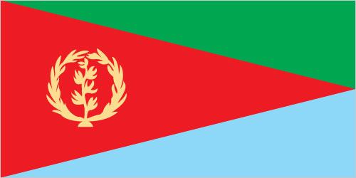
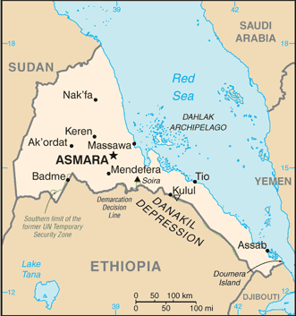

Africa :: ERITREA
Introduction :: ERITREA
-
After independence from Italian colonial control in 1941 and 10 years of British administrative control, the UN established Eritrea as an autonomous region within the Ethiopian federation in 1952. Ethiopia's full annexation of Eritrea as a province 10 years later sparked a violent 30-year struggle for independence that ended in 1991 with Eritrean rebels defeating government forces. Eritreans overwhelmingly approved independence in a 1993 referendum. ISAIAS Afworki has been Eritrea's only president since independence; his rule, particularly since 2001, has been highly autocratic and repressive. His government has created a highly militarized society by pursuing an unpopular program of mandatory conscription into national service, sometimes of indefinite length. A two-and-a-half-year border war with Ethiopia that erupted in 1998 ended under UN auspices in December 2000. A UN peacekeeping operation was established that monitored a 25 km-wide Temporary Security Zone. The Eritrea-Ethiopia Boundary Commission (EEBC) created in April 2003 was tasked "to delimit and demarcate the colonial treaty border based on pertinent colonial treaties (1900, 1902, and 1908) and applicable international law." The EEBC on 30 November 2007 remotely demarcated the border, assigning the town of Badme to Eritrea, despite Ethiopia's maintaining forces there from the time of the 1998-2000 war. Eritrea insisted that the UN terminate its peacekeeping mission on 31 July 2008. Eritrea has accepted the EEBC's "virtual demarcation" decision and repeatedly called on Ethiopia to remove its troops. Ethiopia has not accepted the demarcation decision, and neither party has entered into meaningful dialogue to resolve the impasse. Eritrea is subject to several UN Security Council Resolutions (initially in 2009 and renewed annually) imposing an arms embargo and a travel ban and assets freeze on certain individuals, in view of evidence that it has supported armed opposition groups in the region.
Geography :: ERITREA
-
Eastern Africa, bordering the Red Sea, between Djibouti and Sudan15 00 N, 39 00 EAfricatotal: 117,600 sq kmland: 101,000 sq kmwater: 16,600 sq kmcountry comparison to the world: 102slightly larger than Pennsylvaniatotal: 1,840 kmborder countries (3): Djibouti 125 km, Ethiopia 1,033 km, Sudan 682 km2,234 km (mainland on Red Sea 1,151 km, islands in Red Sea 1,083 km)territorial sea: 12 nmhot, dry desert strip along Red Sea coast; cooler and wetter in the central highlands (up to 61 cm of rainfall annually, heaviest June to September); semiarid in western hills and lowlandsdominated by extension of Ethiopian north-south trending highlands, descending on the east to a coastal desert plain, on the northwest to hilly terrain and on the southwest to flat-to-rolling plainsmean elevation: 853 melevation extremes: lowest point: near Kulul within the Danakil Depression -75 mhighest point: Soira 3,018 mgold, potash, zinc, copper, salt, possibly oil and natural gas, fishagricultural land: 75.1%arable land 6.8%; permanent crops 0%; permanent pasture 68.3%forest: 15.1%other: 9.8% (2011 est.)210 sq km (2012)density is highest in the center of the country in and around the cities of Asmara (capital) and Keren; smaller settlements exist in the north and southfrequent droughts, rare earthquakes and volcanoes; locust swarmsvolcanism: Dubbi (1,625 m), which last erupted in 1861, was the country's only historically active volcano until Nabro (2,218 m) came to life on 12 June 2011deforestation; desertification; soil erosion; overgrazingparty to: Biodiversity, Climate Change, Climate Change-Kyoto Protocol, Desertification, Endangered Species, Hazardous Wastes, Ozone Layer Protectionsigned, but not ratified: none of the selected agreementsstrategic geopolitical position along world's busiest shipping lanes; Eritrea retained the entire coastline of Ethiopia along the Red Sea upon de jure independence from Ethiopia on 24 May 1993
People and Society :: ERITREA
-
5,918,919 (July 2017 est.)country comparison to the world: 112noun: Eritrean(s)adjective: Eritreannine recognized ethnic groups: Tigrinya 55%, Tigre 30%, Saho 4%, Kunama 2%, Rashaida 2%, Bilen 2%, other (Afar, Beni Amir, Nera) 5% (2010 est.)Tigrinya (official), Arabic (official), English (official), Tigre, Kunama, Afar, other Cushitic languagesMuslim, Coptic Christian, Roman Catholic, ProtestantEritrea is a persistently poor country that has made progress in some socioeconomic categories but not in others. Education and human capital formation are national priorities for facilitating economic development and eradicating poverty. To this end, Eritrea has made great strides in improving adult literacy – doubling the literacy rate over the last 20 years – in large part because of its successful adult education programs. The overall literacy rate was estimated to be almost 74% in 2015; more work needs to be done to raise female literacy and school attendance among nomadic and rural communities. Subsistence farming fails to meet the needs of Eritrea’s growing population because of repeated droughts, dwindling arable land, overgrazing, soil erosion, and a shortage of farmers due to conscription and displacement. The government’s emphasis on spending on defense over agriculture and its lack of foreign exchange to import food also contribute to food insecurity.Eritrea has been a leading refugee source country since at least the 1960s, when its 30-year war for independence from Ethiopia began. Since gaining independence in 1993, Eritreans have continued migrating to Sudan, Ethiopia, Yemen, Egypt, or Israel because of a lack of basic human rights or political freedom, educational and job opportunities, or to seek asylum because of militarization. Eritrea’s large diaspora has been a source of vital remittances, funding its war for independence and providing 30% of the country’s GDP annually since it became independent.In the last few years, Eritreans have increasingly been trafficked and held hostage by Bedouins in the Sinai Desert, where they are victims of organ harvesting, rape, extortion, and torture. Some Eritrean trafficking victims are kidnapped after being smuggled to Sudan or Ethiopia, while others are kidnapped from within or around refugee camps or crossing Eritrea’s borders. Eritreans composed approximately 90% of the conservatively estimated 25,000-30,000 victims of Sinai trafficking from 2009-2013, according to a 2013 consultancy firm report.0-14 years: 40.17% (male 1,195,210/female 1,182,603)15-24 years: 19.57% (male 576,315/female 582,143)25-54 years: 32.63% (male 950,121/female 981,163)55-64 years: 3.7% (male 94,767/female 124,528)65 years and over: 3.92% (male 97,530/female 134,539) (2017 est.)total dependency ratio: 85youth dependency ratio: 78.3elderly dependency ratio: 6.8potential support ratio: 14.8 (2015 est.)total: 19.7 yearsmale: 19.2 yearsfemale: 20.1 years (2017 est.)country comparison to the world: 2000.85% (2017 est.)country comparison to the world: 12029.6 births/1,000 population (2017 est.)country comparison to the world: 397.2 deaths/1,000 population (2017 est.)country comparison to the world: 126-13.9 migrant(s)/1,000 population (2017 est.)country comparison to the world: 216density is highest in the center of the country in and around the cities of Asmara (capital) and Keren; smaller settlements exist in the north and southurban population: 23.6% of total population (2017)rate of urbanization: 4.72% annual rate of change (2015-20 est.)ASMARA (capital) 804,000 (2015)at birth: 1.03 male(s)/female0-14 years: 1.01 male(s)/female15-24 years: 0.99 male(s)/female25-54 years: 0.97 male(s)/female55-64 years: 0.74 male(s)/female65 years and over: 0.75 male(s)/femaletotal population: 0.97 male(s)/female (2016 est.)21.3 yearsnote: median age at first birth among women 25-29 (2010 est.)501 deaths/100,000 live births (2015 est.)country comparison to the world: 20total: 45 deaths/1,000 live birthsmale: 52 deaths/1,000 live birthsfemale: 37.9 deaths/1,000 live births (2017 est.)country comparison to the world: 41total population: 65.2 yearsmale: 62.7 yearsfemale: 67.8 years (2017 est.)country comparison to the world: 1793.99 children born/woman (2017 est.)country comparison to the world: 368.4% (2010)3.3% of GDP (2014)country comparison to the world: 1770.7 beds/1,000 population (2011)improved:urban: 73.2% of populationrural: 53.3% of populationtotal: 57.8% of populationunimproved:urban: 26.8% of populationrural: 46.7% of populationtotal: 42.2% of population (2015 est.)improved:urban: 44.5% of populationrural: 7.3% of populationtotal: 15.7% of populationunimproved:urban: 55.5% of populationrural: 92.7% of populationtotal: 84.3% of population (2015 est.)0.6% (2016 est.)country comparison to the world: 5715,000 (2016 est.)country comparison to the world: 82<1000 (2016 est.)degree of risk: highfood or waterborne diseases: bacterial diarrhea, hepatitis A, and typhoid fevervectorborne diseases: malaria and dengue fever (2016)5% (2016)country comparison to the world: 18338.8% (2010)country comparison to the world: 7definition: age 15 and over can read and writetotal population: 73.8%male: 82.4%female: 65.5% (2015 est.)total: 5 yearsmale: 6 yearsfemale: 5 years (2014)
Government :: ERITREA
-
conventional long form: State of Eritreaconventional short form: Eritrealocal long form: Hagere Ertralocal short form: Ertraformer: Eritrea Autonomous Region in Ethiopiaetymology: the country name derives from the ancient Greek appellation "Erythra Thalassa" meaning Red Sea, which is the major water body bordering the countrypresidential republicname: Asmara (Asmera)geographic coordinates: 15 20 N, 38 56 Etime difference: UTC+3 (8 hours ahead of Washington, DC, during Standard Time)6 regions (zobatat, singular - zoba); Anseba, Debub (South), Debubawi K'eyih Bahri (Southern Red Sea), Gash Barka, Ma'akel (Central), Semenawi Keyih Bahri (Northern Red Sea)24 May 1993 (from Ethiopia)Independence Day, 24 May (1991)history: ratified by the Constituent Assembly 23 May 1997 (not fully implemented); note - drafting of a new constitution, which began in 2014, continued into 2017amendments: proposed by the president of Eritrea or by assent of at least one-half of the National Assembly membership; passage requires at least an initial three-quarters majority vote by the Assembly and, after one year, final passage by at least four-fifths majority vote by the Assembly (2017)mixed legal system of civil, customary, and Islamic religious lawhas not submitted an ICJ jurisdiction declaration; non-party state to the ICCtcitizenship by birth: nocitizenship by descent only: at least one parent must be a citizen of Eritreadual citizenship recognized: noresidency requirement for naturalization: 20 years18 years of age; universalchief of state: President ISAIAS Afworki (since 8 June 1993); note - the president is both chief of state and head of government and is head of the State Council and National Assemblyhead of government: President ISAIAS Afworki (since 8 June 1993)cabinet: State Council appointed by the presidentelections/appointments: president indirectly elected by the National Assembly for a 5-year term (eligible for a second term); the only election was held on 8 June 1993, following independence from Ethiopia (next election postponed indefinitely)election results: ISAIAS Afworki elected president by the transitional National Assembly; percent of National Assembly vote - ISAIAS Afworki (PFDJ) 95%, other 5%description: unicameral National Assembly or Hagerawi Baito (150 seats; 75 members indirectly elected by the ruling party and 75 directly elected by simple majority vote; members serve 5-year terms)elections: in May 1997, following the adoption of the new constitution, 75 members of the PFDJ Central Committee (the old Central Committee of the EPLF), 60 members of the 527-member Constituent Assembly, which had been established in 1997 to discuss and ratify the new constitution, and 15 representatives of Eritreans living abroad were formed into a Transitional National Assembly to serve as the country's legislative body until countrywide elections to form a National Assembly were held; although only 75 of 150 members of the Transitional National Assembly were elected, the constitution stipulates that once past the transition stage, all members of the National Assembly will be elected by secret ballot of all eligible voters; National Assembly elections scheduled for December 2001 were postponed indefinitely due to the war with Ethiopiahighest court(s): High Court (consists of 20 judges and organized into civil, commercial, criminal, labor, administrative, and customary sections)judge selection and term of office: High Court judges appointed by the presidentsubordinate courts: regional/zonal courts; community courts; special courts; sharia courts (for issues dealing with Muslim marriage, inheritance, and family); military courtsPeople's Front for Democracy and Justice or PFDJ [ISAIAS Afworki] (the only party recognized by the government)Democratic Movement for the Liberation of Eritrean Kunama or DMLEKEritrean Democratic Alliance or EDAEritrean Islamic Party for Justice and Development or EIPJD (includes the Eritrean Islamic Jihad (EIJ), Eritrean Islamic Jihad Movement (EIJM), Eritrean Islamic Salvation, and the Eritrean Islamic Foundation)Eritrean National Congress for Democratic Change or ENCDCEritrean National Salvation Front or ENSFEritrean People's Democratic Party or EPDPRed Sea Afar Democratic Organization or RSADOACP, AfDB, AU, COMESA, FAO, G-77, IAEA, IBRD, ICAO, ICC (NGOs), IDA, IFAD, IFC, IFRCS (observer), ILO, IMF, IMO, Interpol, IOC, ISO (correspondent), ITU, ITUC (NGOs), LAS (observer), MIGA, NAM, OPCW, PCA, UN, UNCTAD, UNESCO, UNIDO, UNWTO, UPU, WCO, WFTU (NGOs), WHO, WIPO, WMOchief of mission: Ambassador (vacant); Charge d'Affaires BERHANE Gebrehiwet Solomon (since 15 March 2011)chancery: 1708 New Hampshire Avenue NW, Washington, DC 20009telephone: [1] (202) 319-1991FAX: [1] (202) 319-1304chief of mission: Ambassador (vacant); Charge d'Affaires Natalie E. BROWN (since September 2016)embassy: 179 Ala Street, Asmaramailing address: P.O. Box 211, Asmaratelephone: [291] (1) 120004FAX: [291] (1) 127584red isosceles triangle (based on the hoist side) dividing the flag into two right triangles; the upper triangle is green, the lower one is blue; a gold wreath encircling a gold olive branch is centered on the hoist side of the red triangle; green stands for the country's agriculture economy, red signifies the blood shed in the fight for freedom, and blue symbolizes the bounty of the sea; the wreath-olive branch symbol is similar to that on the first flag of Eritrea from 1952; the shape of the red triangle broadly mimics the shape of the countrynote: one of several flags where a prominent component of the design reflects the shape of the country; other such flags are those of Bosnia and Herzegovina, Brazil, and Vanuatucamel; national colors: green, red, bluename: "Ertra, Ertra, Ertra" (Eritrea, Eritrea, Eritrea)lyrics/music: SOLOMON Tsehaye Beraki/Isaac Abraham MEHAREZGI and ARON Tekle Tesfatsionnote: adopted 1993; upon independence from Ethiopia
Economy :: ERITREA
-
Since formal independence from Ethiopia in 1993, Eritrea has faced many economic problems, including lack of financial resources and chronic drought, which have been exacerbated by restrictive economic policies. Eritrea has a command economy under the control of the sole political party, the People's Front for Democracy and Justice. Like the economies of many African nations, a large share of the population - nearly 80% in Eritrea - is engaged in subsistence agriculture, but the sector only produces a small share of the country's total output.Since the conclusion of the Ethiopia-Eritrea war in 2000, the government has expanded military- and party-owned businesses to complete President ISAIAS's development agenda. The government has strictly controlled the use of foreign currency by limiting access and availability; new regulations in 2013 aimed at relaxing currency controls have had little economic effect. Few large private enterprises exist in Eritrea and most operate in conjunction with government partners, including a number of large international mining ventures, which began production in 2013. In late 2015, the Government of Eritrea introduced a new currency, retaining the name nakfa, and restricted the amount of hard currency individuals could withdraw from banks per month. The changeover has resulted in exchange fluctuations and the scarcity of hard currency available in the market.While reliable statistics on Eritrea are difficult to obtain, erratic rainfall and the percentage of the labor force tied up in national service continue to interfere with agricultural production and economic development. Eritrea's harvests generally cannot meet the food needs of the country without supplemental grain purchases. Copper, potash, and gold production are likely to continue to drive economic growth and government revenue over the next few years, but military spending will continue to compete with development and investment plans.$9.167 billion (2016 est.)$8.731 billion (2015 est.)$8.244 billion (2014 est.)note: data are in 2016 dollarscountry comparison to the world: 159$5.352 billion (2016 est.)3.7% (2016 est.)4.8% (2015 est.)5% (2014 est.)country comparison to the world: 73$1,400 (2016 est.)$1,400 (2015 est.)$1,400 (2014 est.)note: data are in 2016 dollarscountry comparison to the world: 2204% of GDP (2016 est.)1.3% of GDP (2015 est.)4% of GDP (2014 est.)country comparison to the world: 168household consumption: 81%government consumption: 23.6%investment in fixed capital: 9.1%investment in inventories: 0.1%exports of goods and services: 9.8%imports of goods and services: -23.5% (2016 est.)agriculture: 12.1%industry: 29.5%services: 58.5% (2016 est.)sorghum, lentils, vegetables, corn, cotton, tobacco, sisal; livestock, goats; fishfood processing, beverages, clothing and textiles, light manufacturing, salt, cement12.2% (2016 est.)country comparison to the world: 72.623 million (2016 est.)country comparison to the world: 112agriculture: 80%industry and services: 20% (2004 est.)8.6% (2013 est.)10% (2012 est.)country comparison to the world: 10950% (2004 est.)lowest 10%: NA%highest 10%: NA%revenues: $1.554 billionexpenditures: $2.166 billion (2016 est.)29% of GDP (2016 est.)country comparison to the world: 86-11.4% of GDP (2016 est.)country comparison to the world: 202120.9% of GDP (2016 est.)121.8% of GDP (2015 est.)country comparison to the world: 9calendar year9% (2016 est.)9.8% (2015 est.)country comparison to the world: 206NA%$2.74 billion (31 December 2016 est.)$2.386 billion (31 December 2015 est.)country comparison to the world: 119$5.993 billion (31 December 2016 est.)$5.221 billion (31 December 2015 est.)country comparison to the world: 121$5.236 billion (31 December 2016 est.)$4.676 billion (31 December 2015 est.)country comparison to the world: 125$-3 million (2016 est.)$-250.3 million (2015 est.)country comparison to the world: 87$485.4 million (2016 est.)$415.4 million (2015 est.)country comparison to the world: 172gold and other minerals, livestock, sorghum, textiles, food, small industry manufacturesChina 57.7%, India 21.9%, South Korea 4.9%, Serbia 4.2% (2016)$1.049 billion (2016 est.)$1.025 billion (2015 est.)country comparison to the world: 179machinery, petroleum products, food, manufactured goodsChina 18.1%, UAE 15.4%, Saudi Arabia 13.7%, Italy 6.5%, Turkey 5.9%, Brazil 5.3%, Belgium 4.1% (2016)$218.4 million (31 December 2016 est.)$209.6 million (31 December 2015 est.)country comparison to the world: 157$875.6 million (31 December 2016 est.)$873.1 million (31 December 2015 est.)country comparison to the world: 169nakfa (ERN) per US dollar -15.375 (2016 est.)15.375 (2015 est.)15.375 (2014 est.)15.375 (2013 est.)15.375 (2012 est.)
Energy :: ERITREA
-
population without electricity: 4,300,000electrification - total population: 32%electrification - urban areas: 86%electrification - rural areas: 17% (2013)383.8 million kWh (2015 est.)country comparison to the world: 173329.8 million kWh (2015 est.)country comparison to the world: 1790 kWh (2016 est.)country comparison to the world: 1330 kWh (2016 est.)country comparison to the world: 146141,000 kW (2015 est.)country comparison to the world: 17198.6% of total installed capacity (2015 est.)country comparison to the world: 350% of total installed capacity (2015 est.)country comparison to the world: 860% of total installed capacity (2015 est.)country comparison to the world: 1741.4% of total installed capacity (2015 est.)country comparison to the world: 1320 bbl/day (2016 est.)country comparison to the world: 1310 bbl/day (2014 est.)country comparison to the world: 1190 bbl/day (2014 est.)country comparison to the world: 1230 bbl (1 January 2017 es)country comparison to the world: 1310 bbl/day (2014 est.)country comparison to the world: 1393,600 bbl/day (2015 est.)country comparison to the world: 1820 bbl/day (2014 est.)country comparison to the world: 1523,598 bbl/day (2014 est.)country comparison to the world: 1730 cu m (2013 est.)country comparison to the world: 1310 cu m (2013 est.)country comparison to the world: 1770 cu m (2013 est.)country comparison to the world: 990 cu m (2013 est.)country comparison to the world: 1210 cu m (1 January 2014 es)country comparison to the world: 136800,000 Mt (2013 est.)country comparison to the world: 169
Communications :: ERITREA
-
total subscriptions: 66,086subscriptions per 100 inhabitants: 1 (July 2016 est.)country comparison to the world: 154total: 506,000subscriptions per 100 inhabitants: 9 (July 2016 est.)country comparison to the world: 172general assessment: woefully inadequate service provided by state-owned telecom monopoly; most fixed-line telephones are in Asmara; cell phone use only slowly increasing throughout the country; no data servicedomestic: combined fixed-line and mobile-cellular subscribership is less than 10 per 100 personsinternational: country code - 291 (2016)government controls broadcast media with private ownership prohibited; 1 state-owned TV station; state-owned radio operates 2 networks; purchases of satellite dishes and subscriptions to international broadcast media are permitted (2007).ertotal: 69,095percent of population: 1.2% (July 2016 est.)country comparison to the world: 180
Transportation :: ERITREA
-
number of registered air carriers: 1inventory of registered aircraft operated by air carriers: 1 (2015)E3 (2016)13 (2013)country comparison to the world: 151total: 4over 3,047 m: 22,438 to 3,047 m: 2 (2017)total: 9over 3,047 m: 12,438 to 3,047 m: 11,524 to 2,437 m: 5914 to 1,523 m: 2 (2013)1 (2013)total: 306 kmnarrow gauge: 306 km 0.950-m gauge (2014)country comparison to the world: 122total: 4,010 kmpaved: 874 kmunpaved: 3,136 km (2000)country comparison to the world: 158total: 4by type: cargo 2, petroleum tanker 1, roll on/roll off 1 (2010)country comparison to the world: 130major seaport(s): Assab, Massawa
Military and Security :: ERITREA
-
Eritrean Armed Forces: Eritrean Ground Forces, Eritrean Navy, Eritrean Air Force (includes Air Defense Force) (2011)18-40 years of age for male and female voluntary and compulsory military service; 16-month conscript service obligation (2012)
Transnational Issues :: ERITREA
-
Eritrea and Ethiopia agreed to abide by 2002 Ethiopia-Eritrea Boundary Commission's (EEBC) delimitation decision, but neither party responded to the revised line detailed in the November 2006 EEBC Demarcation Statement; Sudan accuses Eritrea of supporting eastern Sudanese rebel groups; in 2008, Eritrean troops moved across the border on Ras Doumera peninsula and occupied Doumera Island with undefined sovereignty in the Red Seacurrent situation: Eritrea is a source country for men, women, and children trafficked for the purposes of forced labor domestically and, to a lesser extent, sex and labor trafficking abroad; the country’s national service program is often abused, with conscripts detained indefinitely and subjected to forced labor; Eritrean migrants, often fleeing national service, face strict exit control procedures and limited access to passports and visas, making them vulnerable to trafficking; Eritrean secondary school children are required to take part in public works projects during their summer breaks and must attend military and educational camp in their final year to obtain a high school graduation certificate and to gain access to higher education and some jobs; some Eritreans living in or near refugee camps, particularly in Sudan, are kidnapped by criminal groups and held for ransom in the Sinai Peninsula and Libya, where they are subjected to forced labor and abusetier rating: Tier 3 – Eritrea does not fully comply with the minimum standards for the elimination of trafficking and is not making significant efforts to do so; the government failed to investigate or prosecute any trafficking offenses or to identify or protect any victims; while the government continued to warn citizens of the dangers of human trafficking through awareness-raising events and poster campaigns, authorities lacked an understanding of the crime, conflating trafficking with transnational migration; Eritrea is not a party to the 2000 UN TIP Protocol (2015)